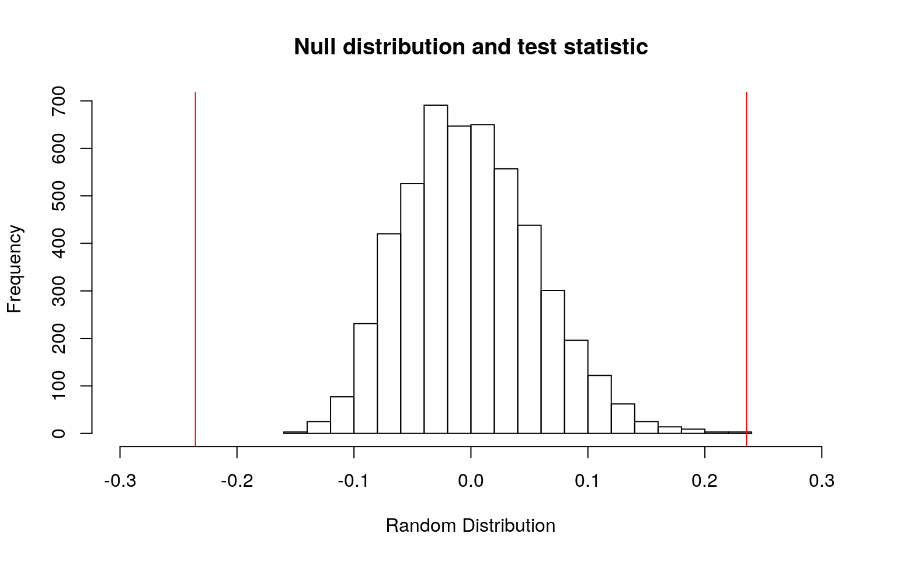
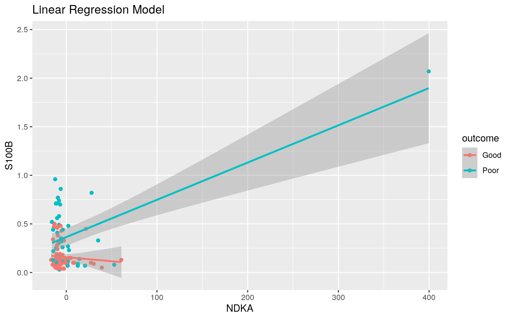
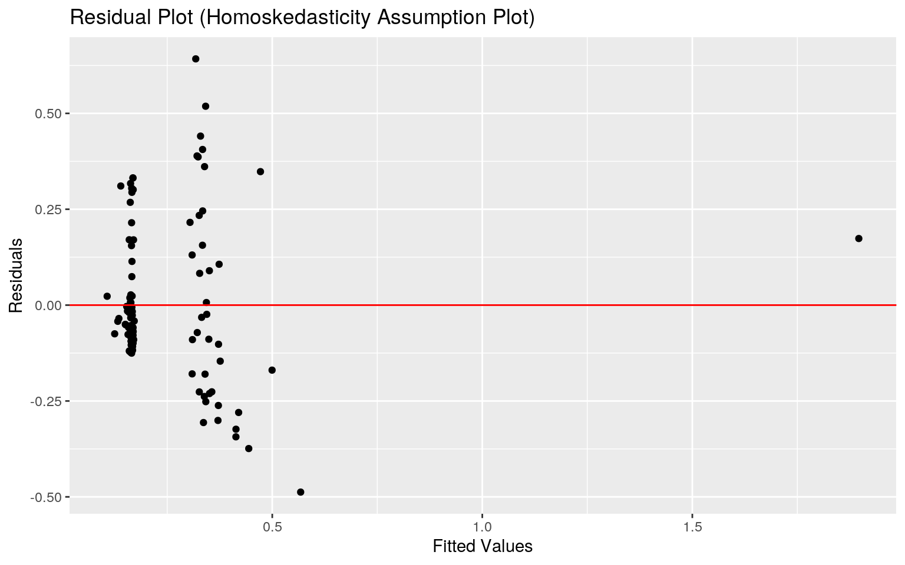
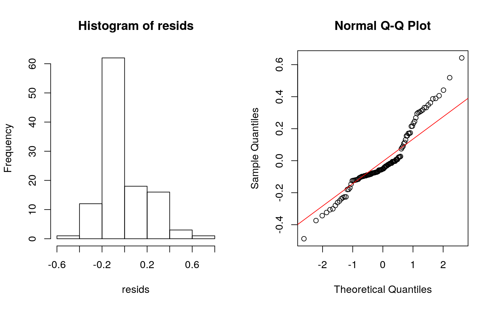
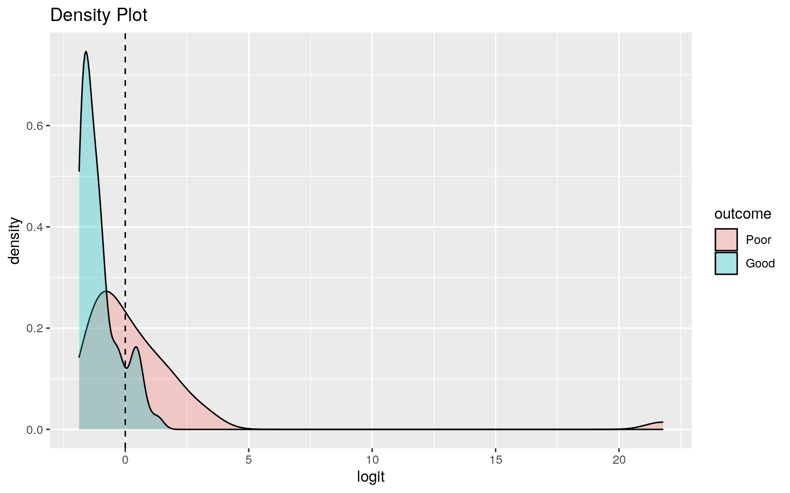
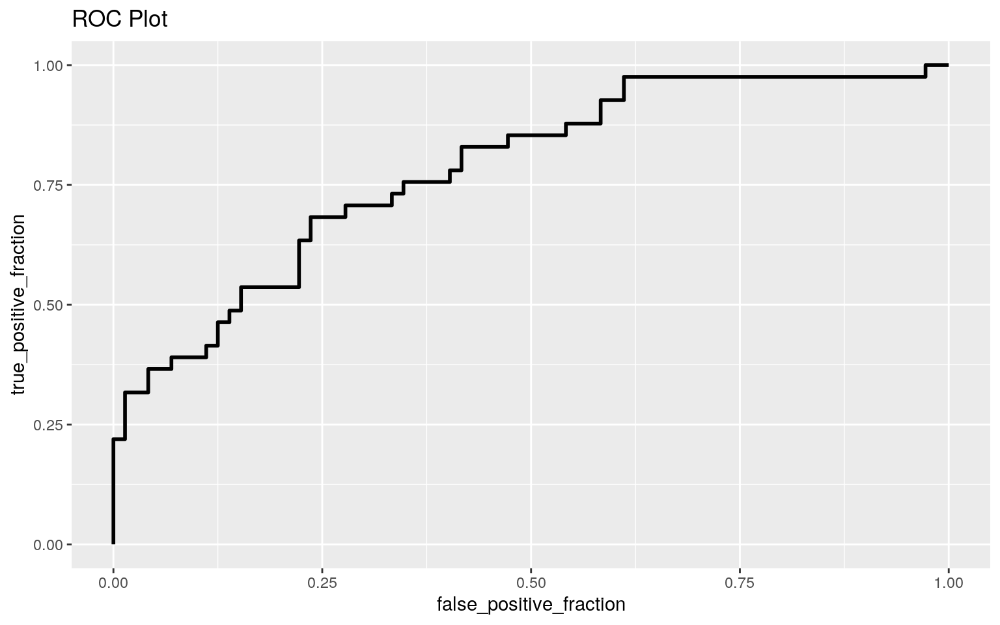

December 2, 2020
Introduction
The dataset I have chosen takes a look into the effects of individuals with an aneurysmal subarachnoid hemorrhage. The dataset summarizes several clinical and one laboratory variable of 113 patients with an aneurysmal subarachnoid hemorrhage. The variables consist of measuring the Glasgow Outcome Score at 6 months (GOS6), outcome of the patient, gender, age, the World Federation of Neurological Surgeons score (WFNS), S100 Calcium Binding Protein B (S100B) concentrations, and Nucleoside diphosphate kinase A (NDKA) concentrations. The two score variables (GOS6 and WFNS) are measurements that categorize the patient based on how they are doing. The higher the GOS6 score, the better a patient is doing, while the higher the WFNS score, the worse a patients is doing. The S100B is a member of the S100 protein family, a commonly used astrocytic marker, that may have a potential to diagnose and predict human neurological disorders. The NDKA is an enzyme required for the synthesis of nucleoside triphosphates (NTP). Lastly, the outcome variable is categorizing the patients effects from their aneurysmal subarachnoid hemorrhage as good or poor.
When choosing my dataset, I wanted to focus on data that related to my field of interest. I am an aspiring physician, and reading in this dataset made my eyes go wide. The brain is an extremely fascinating organ and having the opportunity to learn more about it excites me! From my data, I plan to analyze how variables such as the concentration levels of S100B and NDKA could possible play a role in anticipating the outcome of a patient with an aneurysmal subarachnoid hemorrhage.
 (width=200)
(width=200)
Loading in the Data
I loaded up the dataset and named it brain using the following code below.
library(pROC)
brain <- read_csv("aSAH.csv")
brain$gos6 <- as.character(brain$gos6)
brain$wfns <- as.character(brain$wfns)
glimpse(brain)## Rows: 113
## Columns: 7
## $ gos6 <chr> "5", "5", "5", "5", "1", "1", "4", "1",
"5", "4", "1", "5", "3", "1", "5", "5", "…
## $ outcome <chr> "Good", "Good", "Good", "Good", "Poor",
"Poor", "Good", "Poor", "Good", "Good", "…
## $ gender <chr> "Female", "Female", "Female", "Female",
"Female", "Male", "Male", "Male", "Female…
## $ age <dbl> 42, 37, 42, 27, 42, 48, 57, 41, 49, 75, 37,
49, 49, 71, 64, 49, 63, 33, 51, 54, 7…
## $ wfns <chr> "1", "1", "1", "1", "3", "2", "5", "4",
"1", "2", "5", "2", "5", "5", "1", "2", "…
## $ s100b <dbl> 0.13, 0.14, 0.10, 0.04, 0.13, 0.10, 0.47,
0.16, 0.18, 0.10, 0.12, 0.10, 0.44, 0.7…
## $ ndka <dbl> 3.01, 8.54, 8.09, 10.42, 17.40, 12.75,
6.00, 13.20, 15.54, 6.01, 15.96, 17.86, 5.…MANOVA
Before running a MANOVA test, assumptions were checked. Although it was not explicitly stated that the dataset contained random samples and independent observations, we assume that our dataset meets this assumption as each patient is independent of each other. In order to test the assumption of multivariate normality, a shapiro test was performed. After running the shapiro test, we reject the null hypothesis of assumption being met, as three out of the four groups had a p-value<0.05. Since we failed to meet the assumption for multivariate normality, we did not continue to test the assumption of homogeneity of covariance matrices. Despite our dataset not meeting all of the assumptions, a MANOVA test was still performed.
# Assumptions
library(rstatix)
group <- brain$gos6
DVs <- brain %>% select(age, s100b, ndka)
# Test multivariate normality for each group (null:
# assumption met)
sapply(split(DVs, group), mshapiro_test)## 1 3 4 5
## statistic 0.3198265 0.9421149 0.6416562 0.6738054
## p.value 2.44511e-10 0.4848665 0.001414897 7.876497e-11# MANOVA
man1 <- manova(cbind(age, s100b, ndka) ~ gos6, data = brain)
summary(man1)## Df Pillai approx F num Df den Df Pr(>F)
## gos6 3 0.24961 3.2974 9 327 0.0007258 ***
## Residuals 109
## ---
## Signif. codes: 0 '***' 0.001 '**' 0.01 '*' 0.05 '.' 0.1
' ' 1# ANOVA
summary.aov(man1)## Response age :
## Df Sum Sq Mean Sq F value Pr(>F)
## gos6 3 1624.6 541.55 2.9631 0.03536 *
## Residuals 109 19921.3 182.76
## ---
## Signif. codes: 0 '***' 0.001 '**' 0.01 '*' 0.05 '.' 0.1
' ' 1
##
## Response s100b :
## Df Sum Sq Mean Sq F value Pr(>F)
## gos6 3 1.450 0.48333 7.6955 0.0001036 ***
## Residuals 109 6.846 0.06281
## ---
## Signif. codes: 0 '***' 0.001 '**' 0.01 '*' 0.05 '.' 0.1
' ' 1
##
## Response ndka :
## Df Sum Sq Mean Sq F value Pr(>F)
## gos6 3 7117 2372.3 1.4859 0.2224
## Residuals 109 174028 1596.6# PAIRWISE T-TEST
pairwise.t.test(brain$age, brain$gos6, p.adj = "none")##
## Pairwise comparisons using t tests with pooled SD
##
## data: brain$age and brain$gos6
##
## 1 3 4
## 3 0.091 - -
## 4 0.870 0.315 -
## 5 0.191 0.005 0.386
##
## P value adjustment method: none# PAIRWISE T-TEST
pairwise.t.test(brain$s100b, brain$gos6, p.adj = "none")##
## Pairwise comparisons using t tests with pooled SD
##
## data: brain$s100b and brain$gos6
##
## 1 3 4
## 3 0.934 - -
## 4 0.041 0.071 -
## 5 5.2e-05 0.003 0.958
##
## P value adjustment method: none1 - 0.95^6 #type I error rate ## [1] 0.26490810.05/6 #Bonferroni correction ## [1] 0.008333333A one-way MANOVA was conducted to determine whether age, s100b, or ndka differ by Glasgow Outcome Score. Significant differences were found among the four Glasgow Outcome Scores for at least one of the dependent variables, P illai trace = 0.24961, pseudo F (9,327) = 3.2974, p < 0.05. Univariate ANOVAs for each dependent variable were conducted as follow-up tests to the MANOVA. The univariate ANOVAs for age and s100b were significant before using the Bonferroni method for controlling Type I error rates, F (3, 109) = 2.9631, p < 0.05 and F (3, 109) = 7.6955, p < 0.05 respectively. In total, I conducted 6 hypothesis tests, 1 MANOVA, 3 ANOVAs, and 2 pairwise t-tests. The probability of making at least one type 1 error is equal to 0.2649081. In order to keep the overall type I error rate at 0.05, the (boneferroni adjusted) significance level should be 0.008333333. Now after using the Bonferroni method for controlling Type I error rates, the univariate ANOVA for s100b was the only significant dependent variable showing a mean difference across Glasgow Outcome Score groups. Post hoc analysis was performed conducting pairwise comparisons to determine which Glasgow Outcome Score groups differed in s100b and age. Since s100b was the only dependent variable that remained significant after controlling for Type I errors, we will only analyze the post hoc analysis performed for s100b. The post hoc test for Glasgow Outcome Score groups 3 and 5 were found to differ significantly from each other in terms of the dependent variable, s100b. The post hoc test for Glasgow Outcome Score groups 1 and 5 were also found to differ significantly from each other in terms of the dependent variable, s100b.
Randomization Test
From the MANOVA test, there appears to be a difference between Glasgow Outcome Score groups 3 and 5. In order to test whether there is a difference in mean s100b concentration between Glasgow Outcome Score group 3 and Glasgow Outcome Score group 5, a randomization was performed. The null hypothesis for this test states that there is no difference in mean s100b concentrations between Glasgow Outcome Score group 3 and Glasgow Outcome Score group 5. The alternative hypothesis for this test states that there is a difference in mean s100b concentrations between Glasgow Outcome Score group 3 and Glasgow Outcome Score group 5.
# computing test statistic - mean differences
random_brain <- brain %>% select(gos6, s100b)
random_brain <- random_brain %>% filter(gos6 == 5 | gos6 == 3)
random_brain %>% group_by(gos6) %>% summarize(means = mean(s100b)) %>%
summarize(mean_diff = diff(means)) #t statistic ## # A tibble: 1 x 1
## mean_diff
## <dbl>
## 1 -0.231# randomization test - two tailed t test
set.seed(1234)
rand_dist <- vector()
for (i in 1:5000) {
new <- data.frame(s100b = sample(random_brain$s100b), gos6 = random_brain$gos6)
rand_dist[i] <- mean(new[new$gos6 == "3", ]$s100b) - mean(new[new$gos6 ==
"5", ]$s100b)
}
mean(rand_dist > 0.2312471 | rand_dist < -0.2312471) #p-value## [1] 2e-04# plot visualizing the null distribution/test statistic
{
hist(rand_dist, main = "Null distribution and test statistic",
xlab = "Random Distribution", xlim = c(-0.3, 0.3))
abline(v = c(0.2355454, -0.2355454), col = "red")
}
I calculated the actual mean difference in s100b concentration between the Glasgow Outcome Score group 3 and Glasgow Outcome Score group 5. This calculated mean difference is our t-statistic; equal to 0.2312471. After running the randomization test (two tailed t-test), I reject the null hypothesis of no mean difference between Glasgow Outcome Score group 3 and Glasgow Outcome Score group 5, as the p-value of 0.0002 is less than 0.05. There is a significant difference in mean s100b concentrations between Glasgow Outcome Score group 3 and Glasgow Outcome Score group 5. Our p-value of 0.0002 corresponds to the probability of observing a mean difference as extreme as the one we got under this "randomization distribution".
Linear Regression Model
A multiple linear regression model was conducted in order to predict s100b concentration levels from NDKA and outcome.
# Mean-center numeric variables
brain$ndka_c <- brain$ndka - mean(brain$ndka, na.rm = T)
brain$age_c <- brain$age - mean(brain$age, na.rm = T)
# Linear Regression Model with Categorical
fit <- lm(s100b ~ ndka_c * outcome, data = brain)
summary(fit)##
## Call:
## lm(formula = s100b ~ ndka_c * outcome, data = brain)
##
## Residuals:
## Min 1Q Median 3Q Max
## -0.48759 -0.09847 -0.05124 0.08969 0.64216
##
## Coefficients:
## Estimate Std. Error t value Pr(>|t|)
## (Intercept) 0.1575222 0.0253519 6.213 9.69e-09 ***
## ndka_c -0.0008344 0.0018653 -0.447 0.6555
## outcomePoor 0.2072343 0.0405961 5.105 1.41e-06 ***
## ndka_c:outcomePoor 0.0046678 0.0019300 2.419 0.0172 *
## ---
## Signif. codes: 0 '***' 0.001 '**' 0.01 '*' 0.05 '.' 0.1
' ' 1
##
## Residual standard error: 0.2013 on 109 degrees of
freedom
## Multiple R-squared: 0.4678, Adjusted R-squared: 0.4532
## F-statistic: 31.94 on 3 and 109 DF, p-value: 6.799e-15After running the linear regression, the coefficient estimates can be interpreted as follows. Mean/predicted s100b for individuals with good outcome and average NDKA is 0.1575222. Individuals with poor outcome and average NDKA have predicted s100b that is 0.2072343 higher than individuals with good outcome and average NDKA. For every 1-unit increase in NDKA, predicted s100b goes down 0.0008344 for individuals with good outcome. Slope of NDKA on s100b for individuals with poor outcome is 0.0046678 greater than for individuals with good outcome.
Plotting the Regression
# Plotting the regression
brain %>% ggplot(aes(ndka_c, s100b, color = outcome)) + geom_point(aes(color = outcome)) +
geom_smooth(method = "lm") + ggtitle("Linear Regression Model") +
xlab("NDKA") + ylab("S100B")
Assumptions
Assumptions of linearity, normality, and homoskedasticity were checked. We fail to meet the assumption of homoskedasticity (equal variance assumption) and the assumption of linearity as the points flare out from the line of best fit and are not equally scattered. We also fail to meet the assumption of normality as our points deviate from the Normal Q-Q Plot line and the histogram does not appear to be normally distributed. Our hypothesis test also confirm these findings as p-values are less than 0.05 and therefore we reject the null hypothesis of meeting the assumptions.
# Testing linearity and homoskedasticity
resids <- fit$residuals
fitvals <- fit$fitted.values
data.frame(resids, fitvals) %>% ggplot(aes(fitvals, resids)) +
geom_point() + geom_hline(yintercept = 0, color = "red") +
ggtitle("Residual Plot (Homoskedasticity Assumption Plot)") +
xlab("Fitted Values") + ylab("Residuals")
library(sandwich)
library(lmtest)
bptest(fit)##
## studentized Breusch-Pagan test
##
## data: fit
## BP = 25.009, df = 3, p-value = 1.537e-05# Testing normality
par(mfrow = c(1, 2))
hist(resids)
qqnorm(resids)
qqline(resids, col = "red")
ks.test(resids, "pnorm", mean = 0, sd(resids))##
## One-sample Kolmogorov-Smirnov test
##
## data: resids
## D = 0.1749, p-value = 0.001988
## alternative hypothesis: two-sidedRegression with Robust Standard Errors
In order to correct for the homoskedasticity violation, the linear regression model was redone with robust standard errors.
# Regression with Robust Standard Errors
coeftest(fit, vcov = vcovHC(fit))##
## t test of coefficients:
##
## Estimate Std. Error t value Pr(>|t|)
## (Intercept) 0.1575222 0.0157136 10.0246 < 2.2e-16 ***
## ndka_c -0.0008344 0.0010460 -0.7977 0.4268
## outcomePoor 0.2072343 0.0505447 4.1000 7.981e-05 ***
## ndka_c:outcomePoor 0.0046678 0.0086126 0.5420 0.5889
## ---
## Signif. codes: 0 '***' 0.001 '**' 0.01 '*' 0.05 '.' 0.1
' ' 1# Calculating proportion of variation in outcome explained by
# model
summary(fit)$r.sq## [1] 0.467838Correcting for the homoskedasticity violation, some of our standard error values got bigger, leading to our interaction coefficient estimate to no longer be significant since the p-value of 0.5889 is not less than 0.05 (t=0.5420, df=109). Therefore, the slopes for poor outcome group and good outcome group are not significantly different. Our coefficient estimate for NDKA remains not significant after correcting for the homoskedasticity violation with a p-value of 0.4268 (t=-0.7977, df=109). There is not a significant effect of NDKA on s100b. Even after correcting for the homoskedasticity violation, the only significant result is that of our coefficient estimate for the poor outcome group, since the p-value of 0.00007981 is less than 0.05 (t=4.1000, df=109). There is a significant difference in s100b between the two groups of outcome. My model explain 0.467838 proportion of the variation in the outcome
Regression with Bootstrapped Standard Errors
The same regression model was ran, but this time with bootstrapped standard errors by resampling observations.
# Resampling observations
set.seed(1234)
samp_distn <- replicate(5000, {
boot_dat <- sample_frac(brain, replace = T)
fit <- lm(s100b ~ ndka_c * outcome, data = boot_dat)
coef(fit)
})
# Estimated SEs
samp_distn %>% t %>% as.data.frame %>% summarize_all(sd)## (Intercept) ndka_c outcomePoor ndka_c:outcomePoor
## 1 0.01577962 0.001214599 0.04746677 0.005010205# Bootstrapped CIs
samp_distn %>% t %>% as.data.frame %>% pivot_longer(1:4) %>%
group_by(name) %>% summarize(lower = quantile(value, 0.025),
upper = quantile(value, 0.975))## # A tibble: 4 x 3
## name lower upper
## <chr> <dbl> <dbl>
## 1 (Intercept) 0.128 0.190
## 2 ndka_c -0.00316 0.00172
## 3 ndka_c:outcomePoor -0.00967 0.00680
## 4 outcomePoor 0.107 0.292After bootstapping, the standard error values were very similar to the linear regression model using heteroskedasticity robust standard errors and the original linear regression model. The standard errors for the linear regression model using heteroskedasticity robust standard errors were the largest (most conservative) therefore, it would be best to use this regression model in order to account for any violated assumptions. Computing the confidence intervals for each coefficient estimate led to the same results. The coefficient estimates for NDKA and the interaction remained not significant as the 95% confidence interval does contain zero. There is not a significant effect of NDKA on s100b and the slopes for poor outcome group and good outcome group are not significantly different. Whereas the coefficient estimate for the poor outcome group remained significant as the 95% confidence interval does not contain zero. There is a significant difference in s100b between the two groups of outcome.
Logistic Regression
A logistic regression model was performed in order to try and predict the binary variable outcome from s100b and NDKA.
# Creating a binary numeric variable
data <- brain %>% mutate(y = ifelse(outcome == "Poor", 1, 0))
# Logistic Regression
fit <- glm(y ~ ndka + s100b, data = data, family = binomial(link = "logit"))
coeftest(fit)##
## z test of coefficients:
##
## Estimate Std. Error z value Pr(>|z|)
## (Intercept) -2.378592 0.497764 -4.7786 1.766e-06 ***
## ndka 0.031263 0.016124 1.9389 0.05251 .
## s100b 5.334062 1.262617 4.2246 2.394e-05 ***
## ---
## Signif. codes: 0 '***' 0.001 '**' 0.01 '*' 0.05 '.' 0.1
' ' 1exp(coef(fit))## (Intercept) ndka s100b
## 0.09268096 1.03175713 207.27826758Predicted odds of poor outcome when s100b and NDKA are zero is 0.09268096. Controlling for s100b, for every 1 unit increase in NDKA, predicted odds of poor outcome increases by a factor of 1.03175713. NDKA is a positive non significant effector as the p-value of 0.05251 is greater than 0.05. Controlling for NDKA, for every 1 unit increase in s100b, predicted odds of poor outcome increases by a factor of 207.27826758. s100b is a positive significant effector as the p-value of 0.000023936 is less than 0.05.
Confusion Matrix
# Confusion Matrix
data$prob <- predict(fit, type = "response")
table(predict = as.numeric(data$prob > 0.5), truth = data$outcome) %>%
addmargins()## truth
## predict Good Poor Sum
## 0 63 22 85
## 1 9 19 28
## Sum 72 41 113# Calculating Accuracy, Sensitivity (TPR), Specificity (TNR),
# Precision (PPV) and AUC
class_diag(data$prob, data$y)## acc sens spec ppv f1 auc
## 1 0.7256637 0.4634146 0.875 0.6785714 0.5507246 0.7818428The Accuracy (ACC) is equal to 0.7256637 and represents the proportion of correctly classified outcomes. The Sensitivity (TPR) is equal to 0.4634146 and represents the proportion of poor outcomes correctly classified. The Specificity (TNR) is equal to 0.875 and represents the proportion of good outcomes correctly classified. The Precision (PPV) is equal to 0.6785714 and represents the proportion classified as poor outcome who actually had a poor outcome. The AUC is equal to 0.7818428, meaning that our model is fair at predicting new data as the AUC value is between 0.7 and 0.8. When AUC is 0.7818428, it means there is a 78.18428% chance that model will be able to distinguish between a poor outcome and a good outcome.
Density Plot
data$logit <- predict(fit) #get predicted log-odds (logits)
# plot logit scores for each truth category
data %>% mutate(outcome = factor(outcome, levels = c("Poor",
"Good"))) %>% ggplot(aes(logit, fill = outcome)) + geom_density(alpha = 0.3) +
geom_vline(xintercept = 0, lty = 2) + ggtitle("Density Plot")
ROC Plot and AUC
# ROC Plot and AUC
library(plotROC)
ROCplot <- ggplot(data) + geom_roc(aes(d = y, m = prob), n.cuts = 0) +
ggtitle("ROC Plot")
ROCplot
calc_auc(ROCplot)## PANEL group AUC
## 1 1 -1 0.7818428The ROC curve is plotted with TPR against the FPR where TPR is on y-axis and FPR is on the x-axis. ROC is a probability curve showing the performance of a classification model at all classification thresholds and AUC represents degree or measure of separability. It tells us how much our model is capable of distinguishing between the two outcome groups. The higher the AUC, the better the model is at predicting the outcome groups correctly. With an AUC of 0.7818428, our model is fair at predicting new data. When AUC is 0.7818428, it means there is a 78.18428% chance that model will be able to distinguish between a poor outcome and a good outcome.
Logistic Regression 2
A logistic regression model was performed in order to try and predict the binary variable outcome from gender, age, wfns, s100b, and ndka. The gos6 variable was removed from the dataset as this variable is a good predictor of outcome and resulted in the logistic regression diagnostics to equal 1. In order to try and analyze how the other variables in this dataset can predict the binary variable outcome, the logistic regression was performed without the gos6 variable.
# Preparing the Data
library(pROC)
brain <- read_csv("aSAH.csv")
brain$gos6 <- as.character(brain$gos6)
brain$wfns <- as.character(brain$wfns)
brain <- brain %>% select(-gos6)
# Creating a binary numeric variable
brain <- brain %>% mutate(y = ifelse(outcome == "Poor", 1, 0))
brain$outcome <- NULL
# Logistic Regression
fit <- glm(y ~ ., data = brain, family = "binomial")
summary(fit)##
## Call:
## glm(formula = y ~ ., family = "binomial", data = brain)
##
## Deviance Residuals:
## Min 1Q Median 3Q Max
## -2.4725 -0.7388 -0.1041 0.6292 2.5474
##
## Coefficients:
## Estimate Std. Error z value Pr(>|z|)
## (Intercept) -8.60840 2.33809 -3.682 0.000232 ***
## genderMale 1.33654 0.63385 2.109 0.034980 *
## age 0.03861 0.02092 1.846 0.064954 .
## wfns2 4.19133 1.49127 2.811 0.004945 **
## wfns3 4.02732 1.91438 2.104 0.035403 *
## wfns4 4.21802 1.61566 2.611 0.009035 **
## wfns5 5.56773 1.72586 3.226 0.001255 **
## s100b 2.12347 1.74919 1.214 0.224759
## ndka 0.07666 0.02833 2.706 0.006803 **
## ---
## Signif. codes: 0 '***' 0.001 '**' 0.01 '*' 0.05 '.' 0.1
' ' 1
##
## (Dispersion parameter for binomial family taken to be 1)
##
## Null deviance: 148.037 on 112 degrees of freedom
## Residual deviance: 86.884 on 104 degrees of freedom
## AIC: 104.88
##
## Number of Fisher Scoring iterations: 7In-sample classification diagnostics
In-sample classification diagnostics (Accuracy, Sensitivity, Specificity, Precision, AUC) were reported.
# Logistic Regression
fit <- glm(y ~ ., data = brain, family = "binomial")
probs <- predict(fit, type = "response")
# In-sample classification diagnostics
class_diag(probs, brain$y)## acc sens spec ppv f1 auc
## 1 0.7964602 0.6341463 0.8888889 0.7647059 0.6933333
0.9071816The Accuracy (ACC) is equal to 0.7964602 and represents the proportion of correctly classified outcomes. The Sensitivity (TPR) is equal to 0.6341463 and represents the proportion of poor outcomes correctly classified. The Specificity (TNR) is equal to 0.8888889 and represents the proportion of good outcomes correctly classified. The Precision (PPV) is equal to 0.7647059 and represents the proportion classified as poor outcome who actually had a poor outcome. The AUC is equal to 0.9071816, meaning that our model is great at predicting new data as the AUC value is between 0.9 and 1.0. When AUC is 0.9071816, it means there is a 90.71816% chance that model will be able to distinguish between a poor outcome and a good outcome.
10-fold CV (Out-of-sample classification diagnostics)
A 10-fold CV with the same model was performed and average out-of-sample classification diagnostics were reported.
set.seed(1234)
k = 10
data1 <- brain[sample(nrow(brain)), ]
folds <- cut(seq(1:nrow(brain)), breaks = k, labels = F)
diags <- NULL
for (i in 1:k) {
train <- data1[folds != i, ]
test <- data1[folds == i, ]
truth <- test$y
fit <- glm(y ~ ., data = train, family = "binomial")
probs <- predict(fit, newdata = test, type = "response")
diags <- rbind(diags, class_diag(probs, truth))
}
summarize_all(diags, mean)## acc sens spec ppv f1 auc
## 1 0.7681818 0.5666667 0.8650397 0.6740476 NaN 0.8184921The Accuracy (ACC) is equal to 0.7681818, Sensitivity (TPR) is equal to 0.5666667, Specificity (TNR) is equal to 0.8650397,and Precision (PPV) is equal to 0.6740476. The AUC is equal to 0.8184921, meaning that our model is good at predicting new data as our AUC value is between 0.8 and 0.9. When AUC is 0.8184921, it means there is a 81.84921% chance that model will be able to distinguish between a poor outcome and a good outcome. We see a substantial decrease in the AUC when predicting out of sample as our AUC in sample performance was about 0.9071816 and the AUC for cross validation performance dropped to about 0.8184921. Due to this substantial decrease in AUC, this model does shows signs of overfitting.
LASSO
LASSO was performed on the same logistic model, predicting the binary variable outcome from gender, age, wfns, s100b, and ndka. A lambda of 1 SE was chosen in order to give the simplest model whose accuracy is near that of the best.
library(glmnet)
set.seed(1234)
response <- as.matrix(brain$y)
brain_preds <- model.matrix(y ~ ., data = brain)[, -1]
cv <- cv.glmnet(brain_preds, response, family = "binomial")
lasso_fit <- glmnet(brain_preds, response, family = "binomial",
lambda = cv$lambda.1se)
coef(lasso_fit)## 9 x 1 sparse Matrix of class "dgCMatrix"
## s0
## (Intercept) -2.5593344
## genderMale 0.4054276
## age 0.0143225
## wfns2 0.7127025
## wfns3 .
## wfns4 0.7218547
## wfns5 1.9072487
## s100b 1.5178277
## ndka .# Classification diagnostics
probs <- predict(lasso_fit, brain_preds, type = "response")
class_diag(probs, brain$y)## acc sens spec ppv f1 auc
## 1 0.7876106 0.5121951 0.9444444 0.84 0.6363636 0.8555217After running lasso, the coefficient estimates that were non-zero and retained included genderMale, age, wfns2, wfns4, wfns5, and s100b. After running the classification diagnostics, our AUC value is now 0.8555217, which means the model is good at predicting new data as its cross-validation AUC value is between 0.8 and 0.9. Although this model is a good predictor for new data it is still not as great as the initial full model that had an AUC value of 0.9071816.
10-fold CV After Lasso
A 10-fold CV using only the variables lasso selected for was performed.
set.seed(1234)
k = 10
# creating dummie variables
brain <- brain %>% mutate(Male = ifelse(brain$gender == "Male",
1, 0), wfns2 = ifelse(brain$wfns == "2", 1, 0), wfns4 = ifelse(brain$wfns ==
"4", 1, 0), wfns5 = ifelse(brain$wfns == "5", 1, 0))
data1 <- brain[sample(nrow(brain)), ]
folds <- cut(seq(1:nrow(brain)), breaks = k, labels = F)
diags <- NULL
for (i in 1:k) {
train <- data1[folds != i, ]
test <- data1[folds == i, ]
truth <- test$y
fit <- glm(y ~ Male + age + wfns2 + wfns4 + wfns5 + s100b,
data = train, family = "binomial")
probs <- predict(fit, newdata = test, type = "response")
diags <- rbind(diags, class_diag(probs, truth))
}
summarize_all(diags, mean)## acc sens spec ppv f1 auc
## 1 0.75 0.58 0.8600397 0.7 0.5802381 0.8206151After running the classification diagnostics using the non-zero lasso coefficient estimates, our AUC value is now 0.8206151, which means the model remains a good predictor for new data as its cross-validation AUC value is between 0.8 and 0.9.Although this model is a good predictor for new data it is still not as great as the initial full model that had an AUC value of 0.9071816.